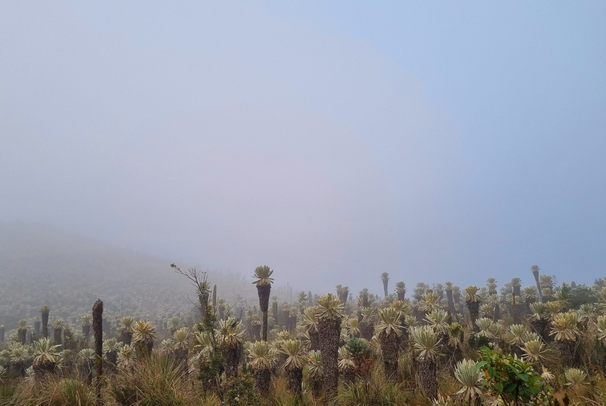
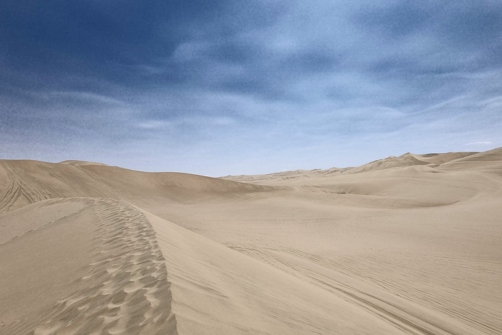
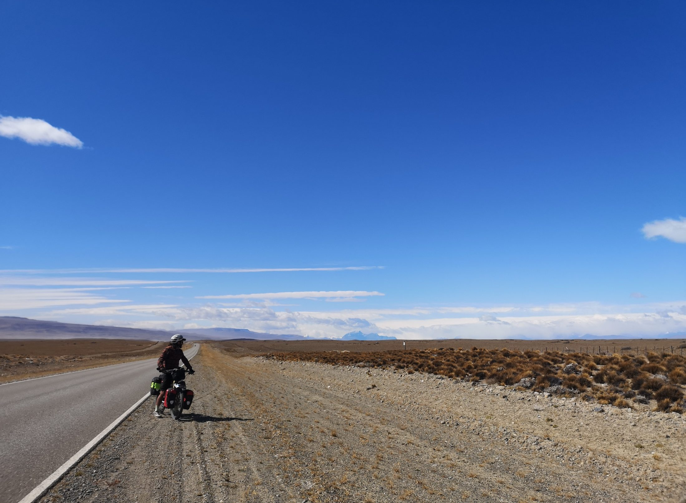

It’s not about arriving first, but knowing how to arrive.Jose Alfredo Jiménez
“What have you
tried until now?”
“Did you get the right answer?”
The process. We can identify what a student needs, and when.
It missed the errors, and it had no AI in it.

Built into the notebooks students already use, so it can respond to how they work.
In classrooms and online, while the work is still happening.
Explaining the problem is how you find it.
The answer arrives. The thinking doesn’t.

Students who started with “fix this for me” kept asking that way, week after week.
Changed how students asked for help
Noticing a better question kept them trying
One lever. There are more to find.
Early results, from small groups.
Teach how to ask a good question, not only how to find the answer.
Design for restraint: a hint before the answer.
Measure the journey, not only the finished product.

When the final answer reveals nothing about the learning that occurred to produce it, the process is all we have left.